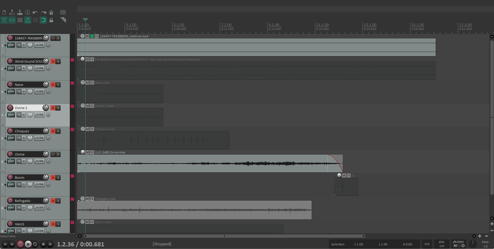

Nesta unidade curricular, o foco foi a exploração da linguagem sonora e da sua aplicação no contexto audiovisual. O projeto consistiu na sonorização completa de uma cena, desde a gravação de sons de raiz até à composição musical, aplicando um conjunto de técnicas de sonoplastia para manipular a narrativa e a resposta emocional do espectador.
O desenvolvimento do projeto foi realizado com recurso a software padrão da indústria de áudio:

O processo criativo focou-se na desconstrução e reconstrução da banda sonora de uma cena visual, aplicando as seguintes técnicas:
O resultado final foi uma cena com uma banda sonora rica e complexa, demonstrando a capacidade de usar o som como uma ferramenta narrativa poderosa. As principais aprendizagens foram